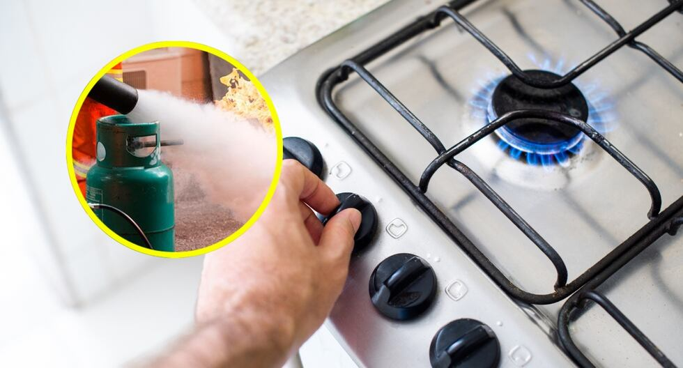
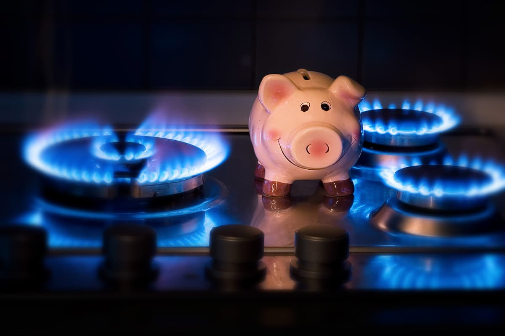

CASO CURIOSO #1: Consejos de seguridad con el gas
¿Sabías que el gas no tiene olor? Te explicamos por qué huele y qué hacer ante una fuga. Consejos de seguridad, seguridad y ahorro para tu hogar.
VER CASO
¿Sabías que el gas no tiene olor? Te explicamos por qué huele y qué hacer ante una fuga. Consejos de seguridad, seguridad y ahorro para tu hogar.
VER CASO
4 consejos simples para que tu balón de gas dure hasta 30% más durante el invierno en Chillán. Optimiza el uso de tus estufas y calefón.
VER CASO